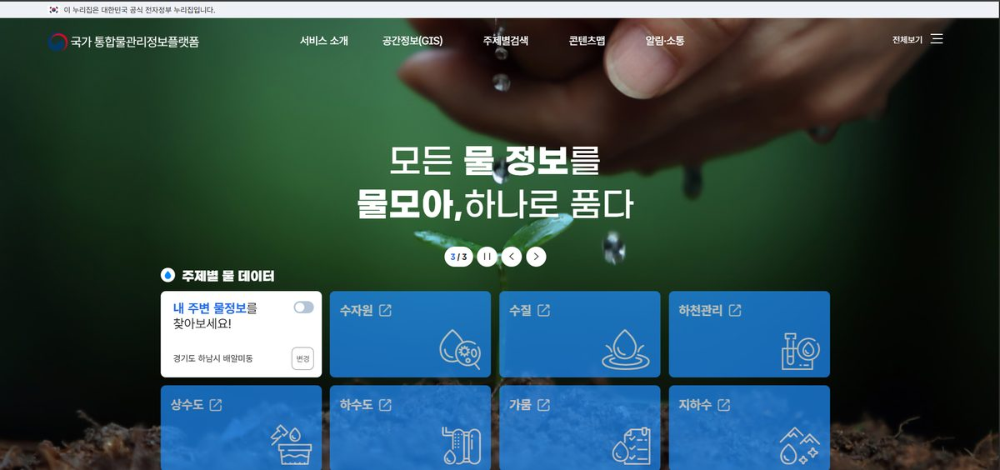

Data Analyst Portfolio
정상 범위를 벗어난 지점을 해석하고,
다음 액션을 설계하는 분석가
가설 검증부터 의사결정까지 이어지는 분석을 만듭니다
01
Profile
품질관리·기획 실무 경험
공공 IT 프로젝트 2년
데이터 분석 역량
통계·가설검정·시각화
다음 액션을 설계하는
주니어 데이터 분석가
Education
2020.03 – 2023.02 · 한국관광대학교 항공서비스과
2025.03 – 2027.07 · 서울사이버대학교 컴퓨터공학과
2026.03 – 2026.10 · 코드잇 데이터분석가 부트캠프
Career
2023.11 – 2025.11 (2년) | 씨이기술 품질관리팀(주임)
• 공공 IT 프로젝트 품질관리·기획, 산출물 작성 및 관리, 감리대응 수행
기획 · 설계 문서화
요구사항정의서 · 화면설계서 · 인터페이스정의서 등
개발 산출물 50종
품질 · 형상관리
품질관리계획서 · 형상관리계획서 · 테스트계획서 등
관리 산출물 32종
감리 대응
준비 · 대응 · 사후 조치
전 과정 수행
스크린샷 준비중
대기환경정보시스템
대기측정시스템 기능개선
2024년 대기환경정보시스템
2025년 대기환경정보시스템
스크린샷 준비중
악취관리시스템
2024년 악취관리시스템 유지
2025년 악취관리시스템 유지보수

기타 프로젝트
국가 통합물관리정보플랫폼 구축
몽골 ICT 기반 통합대기관리 (해외)
03
Skills
Python
SQL
Statistics
Data Analysis
Machine Learning
Visualization
Tools
04
Projects
Project 1
공유오피스 무료체험 결제 전환 분석
2023년 9월 결제전환율 급락(39.6%→25.8%) 원인을 변화점탐지·퍼널 단계별 비교로 통계적으로 특정
→ 급락의 핵심 원인으로 확인
Project 2
서울 지하철 동적 요금제 도입 분석
피크 4시간에 집중된 수요와 주거·업무지구 타겟역 76개를 분석해 요금 인상 시나리오를 설계하고, 지하철-버스 수요 이동까지 검증
Project 3
구독형 교육 서비스 이벤트 데이터 분석
결제 페이지 진입 후 이탈률 85.3%를 핵심 병목으로 특정하고, 무료체험 경험 여부에 따른 전환율 차이를 검증해 학습 행동 세그먼트 4개를 도출
→ 통계적으로 유의미한 차이
Project 4
SNS 텍스트 감정 분류
TF-IDF(1~2gram) + Logistic Regression(class_weight=balanced)로 6개 감정 분류 모델 구축
Project 5
BMW 그룹 글로벌 판매 시계열 예측
STL 분해로 계절성을 검증하고 SARIMA(2,1,2)(0,0,0,12)를 그리드서치로 최종 선정
Project 6
신용카드 고객 세그먼트 분석
PCA(6개 성분, 설명분산 84%) + K-Means(k=5)로 고객 세그먼트 도출, 세그먼트별 마케팅 전략 제안
Project 7
구독 서비스 멤버십 가격 UI A/B 테스트
가격 표시 방식(A/B)에 따른 ARPU·구독전환율 차이를 t-검정·모비율 z-검정으로 검증
→ 신중한 가격 UI 설계 필요